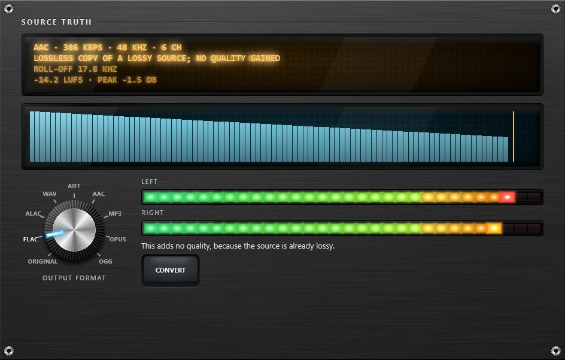
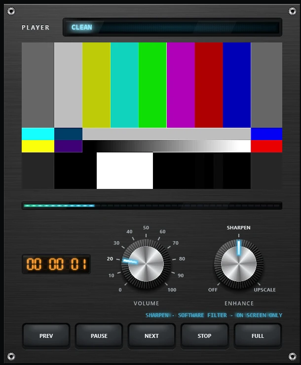
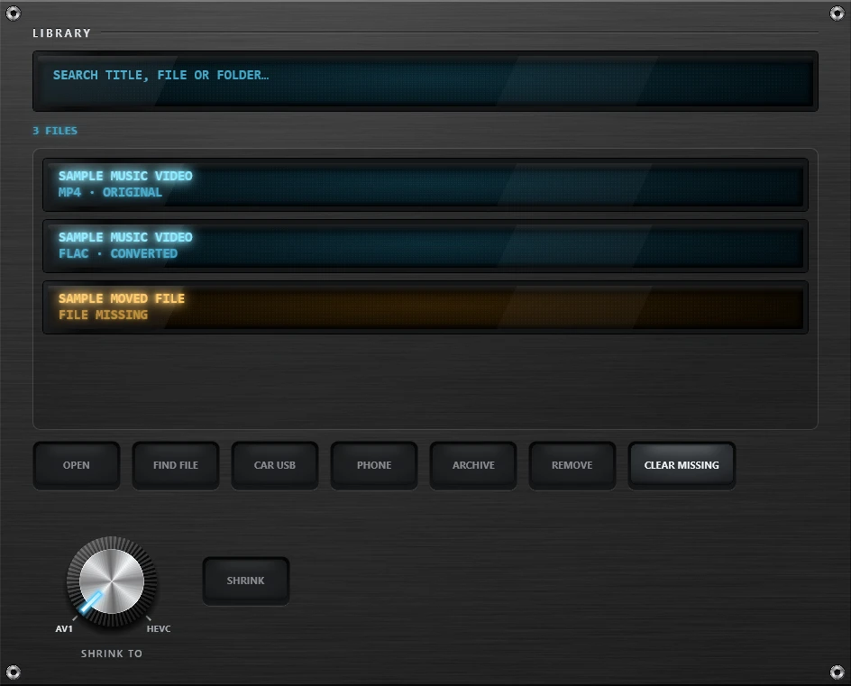
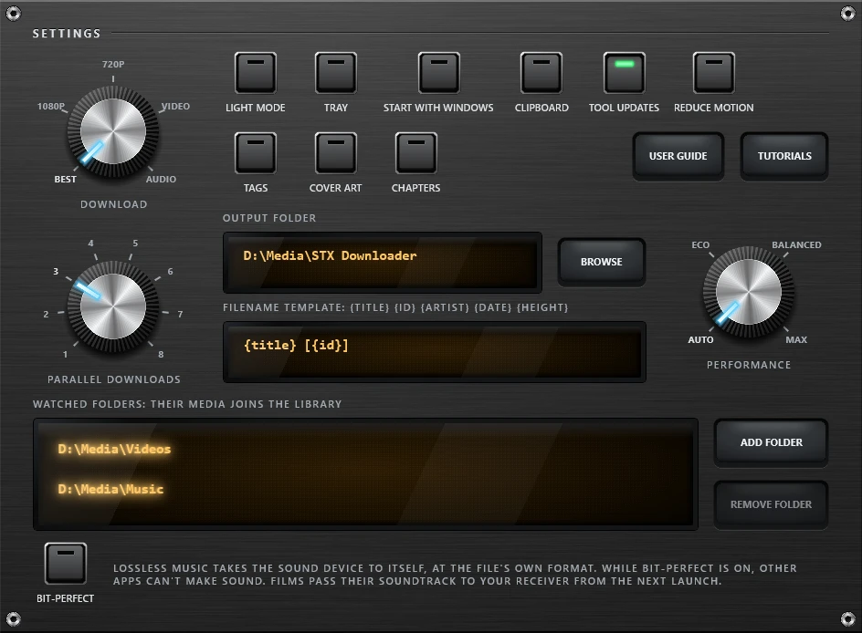

Captured from STX Downloader 1.2.0
Save, check and play. All in one app.
Paste a link and yt-dlp handles it. Source Truth measures the audio you saved. VLC 3.0.24's engine plays it.
DownloadSetup, 254 MB
Save, check and play
Save
Save from a link or a page
- Paste a link and yt-dlp handles it, single items and playlists. A playlist asks first.
- Video isn't re-encoded by default: the original streams, in MP4 when they fit and MKV when they don't.
- A Chrome and Edge extension captures HLS, DASH and direct media from a page.
Check
What the audio really is
- Source Truth measures the saved file's audio: spectrum, roll-off, loudness and true peak.
- It gives a plain verdict, and never says re-encoding improved anything.

, opens at full size
Play
Play it on VLC's engine
- VLC 3.0.24's engine, pinned by sha256, with the parts that would open network ports or run site scripts left out.
- 120 types, each proven by a corpus file.
- Unencrypted DVD and Blu-ray, streams and internet radio. Encrypted discs are refused.

, opens at full size
More screens

, opens at full size
Library
The Library holds what you saved, files you opened with STX, and your Videos and Music folders. Removing a row never removes a file.
SHRINK makes a smaller AV1 or HEVC copy with Opus sound, kept only after it checks out. The original is only read.

, opens at full size
Settings
BIT-PERFECT, off by default, sends lossless music to your sound device at the file's own rate and depth.
USER GUIDE and TUTORIALS open from here.
Is it safe?
The setup and the app's own files are signed through Azure Artifact Signing.
It installs for your account only, with no administrator prompt.
The setup brings yt-dlp, FFmpeg and Deno, each checked against its publisher's checksum, so its first launch downloads nothing and works offline.
The browser hand-off uses a named pipe only your Windows account can open, and opens no network port.
Stream tokens, cookies and headers stay in memory, and are scrubbed from the log you can copy.
Open source, under the MIT license.
Download 1.2.0
Setup
STXDownloader-1.2.0-setup.exe, 254 MB
SHA-256
1E067230272C7223E1A9430E0B9BFF8E3ADF8C8666477CB2323C2592E7590363
DRM is out of scope: pages that use DRM get no Save button, and STX doesn't save or play DRM media.
You're responsible for each site's terms and the law where you live.
Portable zip
STXDownloader-1.2.0-win-x64.zip, 171 MB
SHA-256
FEAF84A7A1CE1168F31DB827D637F42745886DB1AFF17DA30DFA86BAB53308F1
The zip carries the app alone, and its first launch downloads the tools.
Requirements
Windows 10 version 2004 or later, x64.
About 400 MB for the app, and about 430 MB for its tools.
No runtime to install first.
Install
- Run the setup. It installs for your account only.
- Wait for the light at the top right to turn green and read ENGINE CURRENT.
- Copy a video's link, then press PASTE on the Source plate.
Proof
Tested on a Core Ultra 7 258V laptop: Arc 140V graphics, a 2880x1800 panel at 175%, HDR on.
Proven
- BIT-PERFECT at 44.1 and 96 kHz on a real sound device.
- UPSCALE running on the Arc's super resolution.
- A high-DPI screen.
- HDR10 reaching an HDR screen as HDR.
- Default Apps as Windows past 24H2 reads them.
Not yet
- The reference PC's runs of the 50,000-row memory budget, the screenshot gate and the corpus gate.
- A bit comparison through a hardware loopback.
- A USB DAC unplugged mid-play.
- Real DVD and Blu-ray discs.
- Film passthrough to a receiver.
- An RTX GPU, and a clean machine for the installer.
Known
4K60 on the laptop's panel loses 3 to 4 pictures a second in about half of the runs. What limits it is VLC 3.0.24's Direct3D 11 output, not decoding.
Releases
1.2.0 2026-11-15
From a user's review of 1.1.0: 120 file types, up from 51, a guide that isn't a wall of text, real tutorials, and a way to clear finished rows.
1.1.0 2026-11-09
STX plays what it saves: a media player on VLC's engine, the default player, discs and streams, bit-perfect sound, ENHANCE and Shrink.
Build it yourself
Needs the .NET 10 SDK, Node 24 for the extension's tests, and PowerShell 7.
dotnet build src/Stx.App -c Release -p:Platform=x64
dotnet test --project tests/Stx.Core.Tests
node --test "extension/test/*.test.js"
tools\Publish.ps1